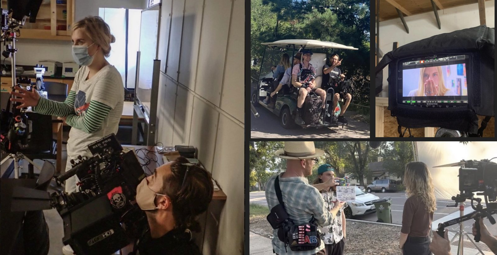

I am a storyteller who writes, directs, and produces narrative feature films, limited series, and podcasts. My mediums span from claymation to live action, but the thread uniting all my work is a desire to take complex, multifaceted, important subject matter and make it wildly entertaining and accessible through effective storytelling.
In short, I find the compelling human narrative inside subjects people might otherwise find too technical, complicated, uncomfortable, unfamiliar, or inaccessible—and turn it into entertainment they want to engage with, and social issues they now want to understand and affect, presented in interesting and thought provoking ways they can easily understand.
In film, I have experience managing large teams across all stages of production, writing and directing across diverse mediums, including live action, animation, and claymation. I have directed and produced a feature film currently in post-production, written four feature-length screenplays (one currently in post-production and one in pre-production), and created a ten-episode limited series.
In podcasting and writing, I have secured and hosted interviews with former U.S. Secretary of the Interior Ken Salazar, New York Times bestselling journalist and author Kevin Fedarko, and former Black Panther Party chair Elaine Brown, among other notable figures. I have pitched and created podcasts for organizations that were initially hesitant to invest in the medium, but later reported them as their most successful drivers of leads and donations. At American Rivers, a podcast I pitched and created 11 years ago, at age 19, became such a major public-engagement and education tool that it inspires the creation of the NGO’s entire storytelling division.
I hold an undergraduate degree in organismal biology and ecology and a graduate degree in computer science.
Let me add to your vision by combining both my technical and creative sides to meet your storytelling needs!